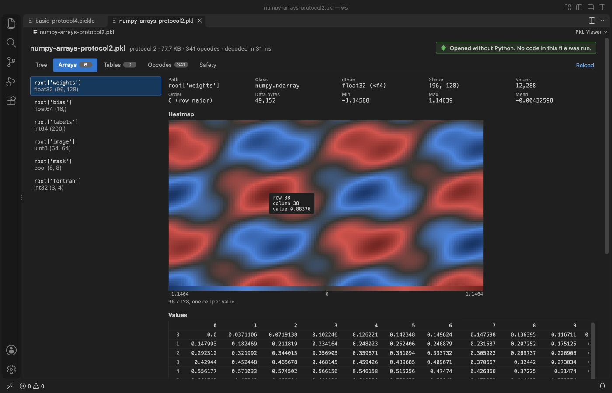
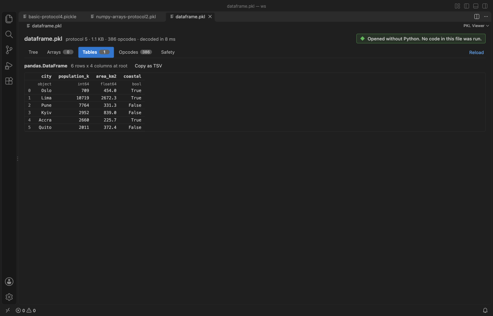

Pickle Viewer & PKL Viewer (No Python)
Pickle Viewer & PKL Viewer (No Python), a VS Code extension by Zovo
Open Python .pkl, .pickle and .p files in VS Code without Python, and see what a pickle would do before you load it.
Free, MIT license. Needs VS Code 1.90.0 or newer. Extension ID zovo.zovo-pickle-viewer, version 0.1.5.

Screenshot of VS Code 1.142 with a sample made by scripts/make_samples.py.
- Nothing runs. The file is decoded by a reader that never imports or calls anything, so a hostile pickle cannot touch your machine.
- Your data stays readable. You get a tree with Python types, NumPy arrays with stats and a heatmap, and pandas DataFrames as a table.
- A safety check that lists every name the file would import or call in Python, with risky ones like
os.systemandbuiltins.evalflagged.
Quick start
- Install PKL Viewer & Pickle Viewer.
- Click a
.pklor.picklefile in the Explorer. For a.pfile, right-click it and pick Open in PKL Viewer.
Questions people ask
Is Pickle Viewer & PKL Viewer (No Python) free?
Yes. Pickle Viewer & PKL Viewer (No Python) is free and MIT licensed.
How do I install Pickle Viewer & PKL Viewer (No Python)?
Click "Install in VS Code" above, or search for zovo.zovo-pickle-viewer in the Extensions view.
What you see
| Tab | Shows |
|---|---|
| Tree | The decoded object with types, lengths and values. Dicts keep any key type, tuples stay tuples, and bytes, sets, datetimes and big integers keep their Python type. A class the viewer cannot rebuild shows as a placeholder named module.Class, with the attributes the file stores for it. |
| Arrays | NumPy arrays rebuilt from their bytes when the dtype is a plain number type. It shows the shape, dtype, order, min, max, mean, NaN count, a heatmap for 2-D and larger arrays, and a grid of the first values. |
| Tables | pandas DataFrames as a table, with column dtypes and the index, when the column blocks are plain numbers, bools or Python objects. Other column types fall back to the tree with a note. |
| Opcodes | A listing like pickletools.dis, with byte offsets, MARK nesting and a count of each opcode. |
| Safety | Every GLOBAL, STACK_GLOBAL, REDUCE and BUILD target, with the byte where it appears and the arguments a call gets. |

The safety check
pickle.load imports every name in a GLOBAL or STACK_GLOBAL opcode and then calls the REDUCE targets. That is how a model file from the internet can run a shell command. PKL Viewer lists those names and rates each one as the table below shows.
| Rating | Meaning | Examples |
|---|---|---|
| Risky | Runs commands or code, or touches files or the network | os.system, subprocess.Popen, builtins.eval, builtins.exec, socket, shutil |
| Check | Helpers that attacks chain together | builtins.getattr-style helpers, operator.attrgetter, functools.partial |
| Needs package | A class from a package outside the standard data types | your own classes, __main__.Model |
| Data type | Plain data | NumPy, pandas, datetime, collections |
When a file is risky, a red banner says what it would call, for example os.system('true',), and the viewer opens on the Safety tab. A clean list is not a promise that a file is safe, so only load pickles you trust.


Formats
- Pickle protocols 0 to 5, including Python 2 strings, out-of-band buffers (shown as placeholders) and persistent ids (shown as placeholders, as in PyTorch files).
- NumPy arrays from protocol 2 (
_reconstruct) and protocol 5 (_frombuffer), C or Fortran order, NumPy 1.x and 2.x names. - pandas DataFrames in the pandas 2.x layout and the older block manager layout.
Big files
Decoding runs in a worker thread, so VS Code stays responsive. Files over 512 MB show a message and are not read (setting pickleViewer.maxFileMB, up to 2048). Large containers show their first 1,000 items, the tree stops at 50,000 nodes, tables show the first 1,000 rows and the opcode listing shows the first 20,000 lines. The opcode counts and the safety check always cover the whole file.
Settings
| Setting | Default | What it does |
|---|---|---|
pickleViewer.maxFileMB | 512 | Largest file to decode. |
pickleViewer.askForRating | true | Ask for a Marketplace rating after 3 files that opened without an error, on 2 different days. "Later" asks one more time after 7 days, "No thanks" never again. It never asks after an error. Turn it off with false. |
Privacy
PKL Viewer works offline. It makes no network calls and sends no telemetry. The webview runs under a strict Content Security Policy, and file text is always inserted as text.
Limits
- Joblib files with compressed arrays, PyTorch
.ptzip archives and.npyfiles are not pickles in this sense and are not opened. - datetime64, structured and string dtypes of NumPy show in the tree and the grid, not as numbers.
- pandas Series, Categorical, nullable and Arrow columns show in the tree.
.popens by choice, not by default, because Progress ABL uses the same extension for source code.
License
MIT. See THIRD-PARTY-NOTICES.md for the pickleparser notice.
Guides
Install Pickle Viewer & PKL Viewer (No Python)
Click the button to open VS Code and install it, or press Ctrl+P (Cmd+P on macOS) in VS Code and run ext install zovo.zovo-pickle-viewer.
Free, MIT license. Needs VS Code 1.90.0 or newer. Extension ID zovo.zovo-pickle-viewer, version 0.1.5.
Source code and issues are on GitHub.
Support this work
If this extension saves you time, you can support the work on GitHub Sponsors. Monthly tiers start at $5, and one-time tiers start at $15. Sponsorship is optional, and the tool works the same without it.
Need your format supported?
Open a format request with a sample file, and I reply there whether it can be done. For USD 299 once, through this GitHub Sponsors tier, I add your file format or a missing feature to this extension, with tests, within 7 days.